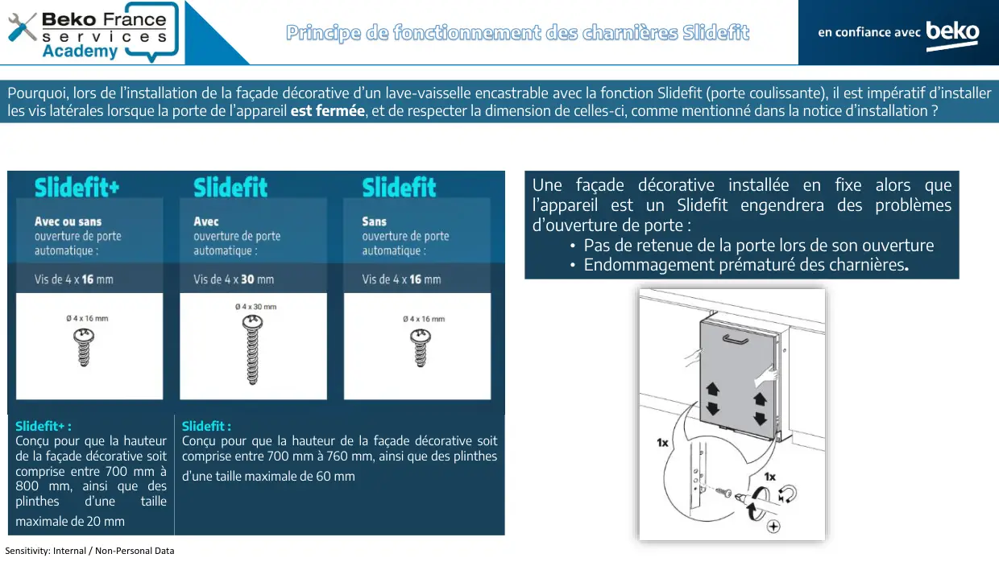
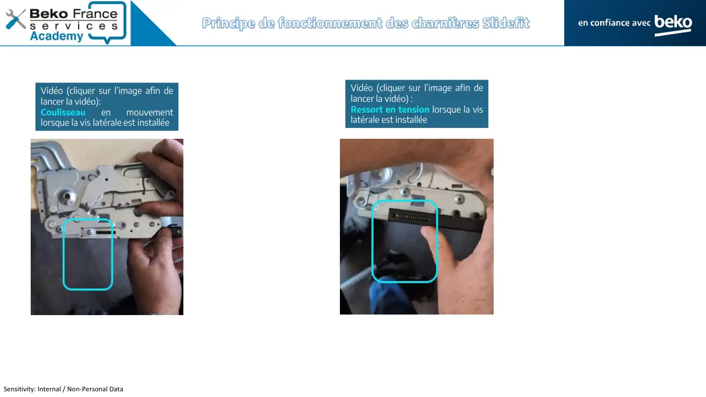

Lave vaisselle Note technique Principe charnière sliding door
Sensitivity: Internal / Non-Personal DataPrincipe de fonctionnement des charnières Slidefit
1 / 6
Sensitivity: Internal / Non-Personal DataIMW 862 MY TIME FRPrincipe de fonctionnement des charnières SlidefitPourquoi, lors de l’installation de la façade décorative d’un lave-vaisselle encastrable avec la fonction Slidefit (porte coulissante), il est impératif d’installerles vis latérales lorsque la porte de l’appareil est fermée, et de respecter la dimension de celles-ci, comme mentionné dans la notice d’installation ?Slidefit+ :Conçu pour que la hauteurde la façade décorative soitcomprise entre 700 mm à800 mm, ainsi que desplinthesd’unetaillemaximale de 20 mmSlidefit :Conçu pour que la hauteur de la façade décorative soitcomprise entre 700 mm à 760 mm, ainsi que des plinthesd’une taille maximale de 60 mmUne façade décorative installée en fixe alors quel’appareil est un Slidefit engendrera des problèmesd’ouverture de porte :• Pas de retenue de la porte lors de son ouverture• Endommagement prématuré des charnières.
2 / 6Sensitivity: Internal / Non-Personal DataCoulisseau dans lequel est mis la vis de maintient latérale lors del’installation de la porte décorative.Principe de fonctionnement des charnières SlidefitCharnière d’un lave-vaisselle avec fonction ouverture de porte automatique et SlidefitRessort de tensionouverture/fermeture de porteLogement du ressort de la fonctionSlidefit
3 / 6Sensitivity: Internal / Non-Personal DataIMW 862 MY TIME FRPrincipe de fonctionnement des charnières SlidefitLorsque les vis latérales (côtés gauche et droit) sont insérées dans le pas-de-vis du coulisseau du Slidefit, celles-ci se positionnent sous le ressort de tellefaçon que, lors de l’ouverture de la porte, le ressort de la fonction Slidefit soit armé afin de générer une retenue.Vis installée sous le ressort
4 / 6
Sensitivity: Internal / Non-Personal DataIMW 862 MY TIME FRPrincipe de fonctionnement des charnières SlidefitVidéo (cliquer sur l’image afin delancer la vidéo):Coulisseauenmouvementlorsque la vis latérale est installéeVidéo (cliquer sur l’image afin delancer la vidéo) :Ressort en tension lorsque la vislatérale est installée
5 / 6Sensitivity: Internal / Non-Personal DataIMW 862 MY TIME FRPrincipe de fonctionnement des charnières SlidefitSi la porte est entre-ouverte ou ouverte complètement lors de l’installation des vis latérales pour la pose de la façade décorative, le coulisseau ne sera pasdans sa position initiale, ce qui aura comme conséquence le fait que la vis viendra se mettre dans les spires du ressort : la vis sera endommagée (tordue parex.) et le ressort sera potentiellement endommagé également, nécessitant le remplacement de la charnière complète.Exempled’unevislatéraleinstallée lorsque le coulisseaun’est pas dans sa position initiale(porte entre-ouverte),La vis vient taper dans les spiresduressort,celasoulèvelelogement su ressort.
6 / 6